Für dieses Projekt wurde eine Markenidentität für eine fiktive Skincare-Brand entwickelt.
Mit dem Ziel ein modernes und hochwertiges Erscheinungsbild zu gestalten, das Reinheit, Natürlichkeit und Vertrauen vermittelt,
lag der Fokus auf einer reduzierten Designsprache mit einer harmonischen Farbpalette, klarer Typografie und einem minimalistischen Verpackungsdesign. Alle Gestaltungs- elemente wurden so gewählt, dass sie die Markenwerte konsequent widerspiegeln und ein stimmiges Gesamtbild schaffen.
Im Rahmen des Projekts entstanden unter anderem das Logo, die Farb- und Typografieauswahl sowie verschiedene Verpackungs- und Markenanwendungen. Besonderes Augenmerk lag darauf, eine zeitlose visuelle Identität zu entwickeln, die sich sowohl im Print- als auch im digitalen Bereich einsetzen lässt.
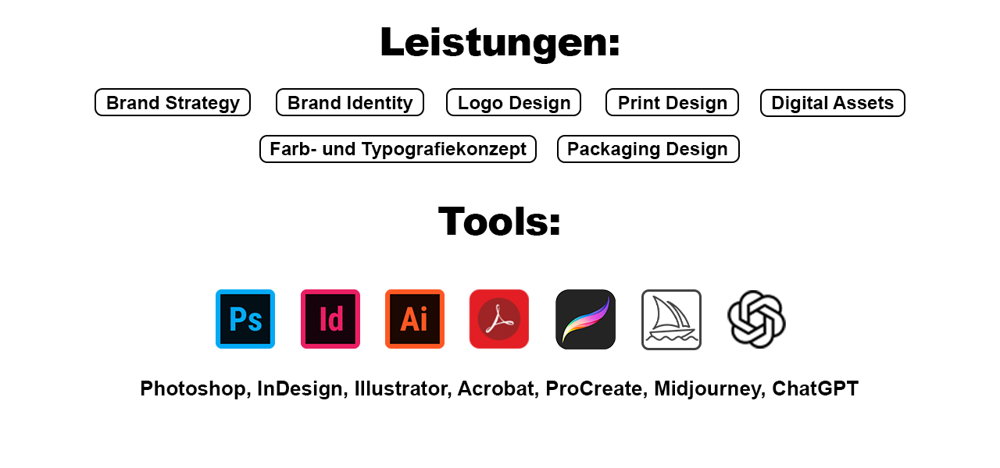
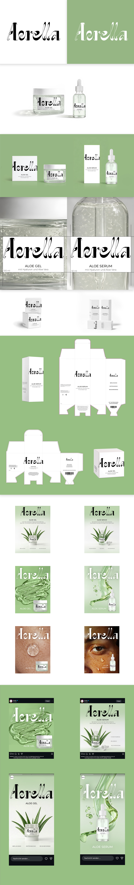
Branding
The olive project
Dieses Projekt umfasst die Entwicklung einer modernen Markenidentität für ein fiktives Café im Herzen von Düsseldorf. Ziel war es, eine frische und einladende Marke zu gestalten, die hochwertigen Kaffee, zeitgemäßes Design und eine urbane Atmosphäre miteinander verbindet.
Ausgehend von der Markenidee entstand eine durchgängige visuelle Identität mit einem klaren Logo, einer harmonischen Farbwelt und einer modernen Typografie. Das Design wurde anschließend auf verschiedene Anwendungen übertragen, darunter Speisekarte, Visitenkarte, Kaffeebecher mit Verpackung, Verpackungen für Kaffeebohnen sowie digitale Assets und Social-Media-Inhalte.
Der Fokus lag auf einem konsistenten Erscheinungsbild, das die Marke über analoge und digitale Berührungspunkte hinweg erlebbar macht und den Charakter eines modernen Stadtcafés authentisch widerspiegelt.
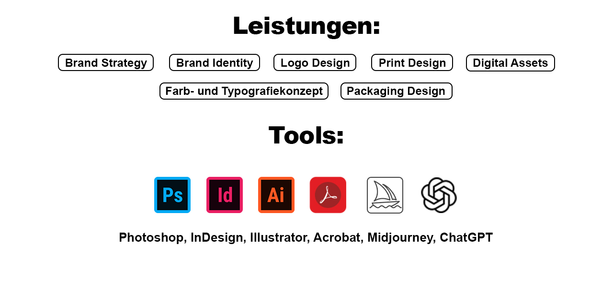
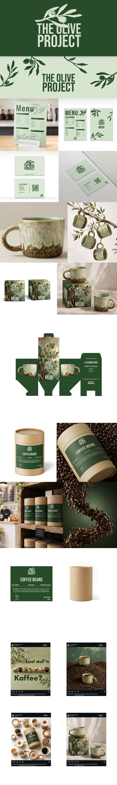
Logo Design
The Slot Machine
Für dieses Projekt entstand eine Sammlung von über 20 individuell entwickelten Logos aus verschiedenen Branchen, darunter Beauty, Tech, Science, Gaming und Fitness. Jedes Logo wurde mit einem eigenen gestalterischen Ansatz entwickelt und auf die jeweilige Branche abgestimmt.
Um die Entwürfe nicht statisch zu präsentieren, wurden sie in einer Animation in Adobe After Effects inszeniert. Das Konzept greift die Mechanik einer Slotmaschine auf und verbindet die Vielfalt der Logos mit einer dynamischen und spielerischen Darstellung. So entsteht eine Präsentation, die Grafikdesign und Motion Design miteinander verbindet und den Fokus auf die Individualität der einzelnen Marken legt.
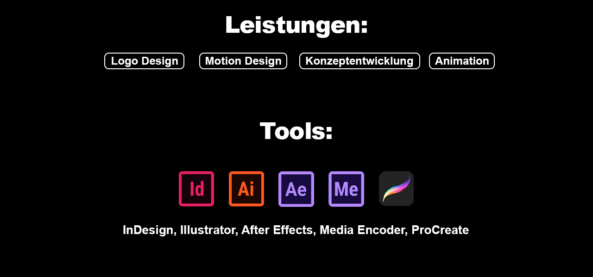
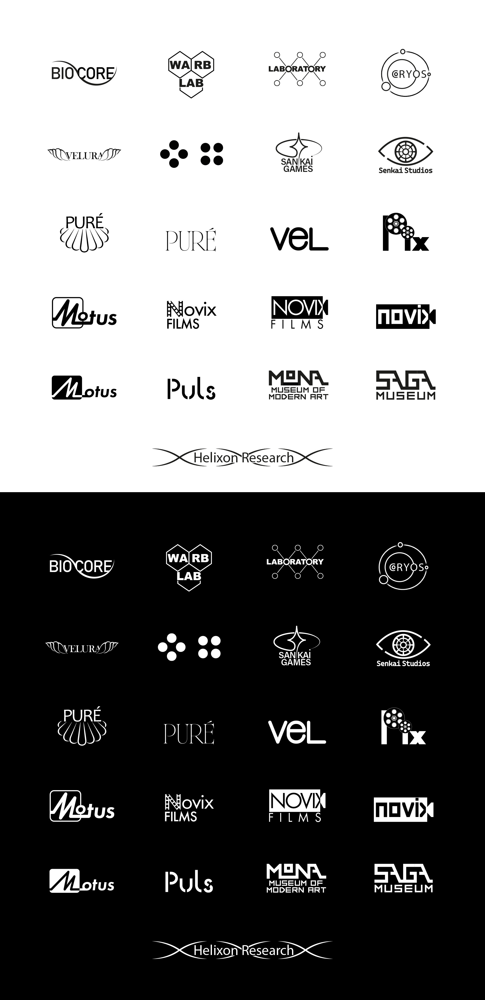
Website Redesign
Eiscafé piazza
Für dieses Redesign wurde das Erscheinungsbild der Website eines lokalen Eiscafés vollständig neu konzipiert. Ziel war es, der Marke einen modernen und einladenden Auftritt zu verleihen, der die Qualität des Angebots sowie die Atmosphäre des Cafés visuell widerspiegelt.
Im Rahmen des Projekts entstand ein neues Logo, ein abgestimmtes Farbkonzept sowie ein vollständig überarbeitetes Webdesign mit einer klaren visuellen Struktur. Ergänzend wurden neue Bildwelten entwickelt, um das Gesamtbild zu vervollständigen und einen zeitgemäßen Markenauftritt zu schaffen. Der Fokus lag auf einer harmonischen Verbindung aus Benutzerfreundlichkeit, Ästhetik und einer konsistenten visuellen Identität.
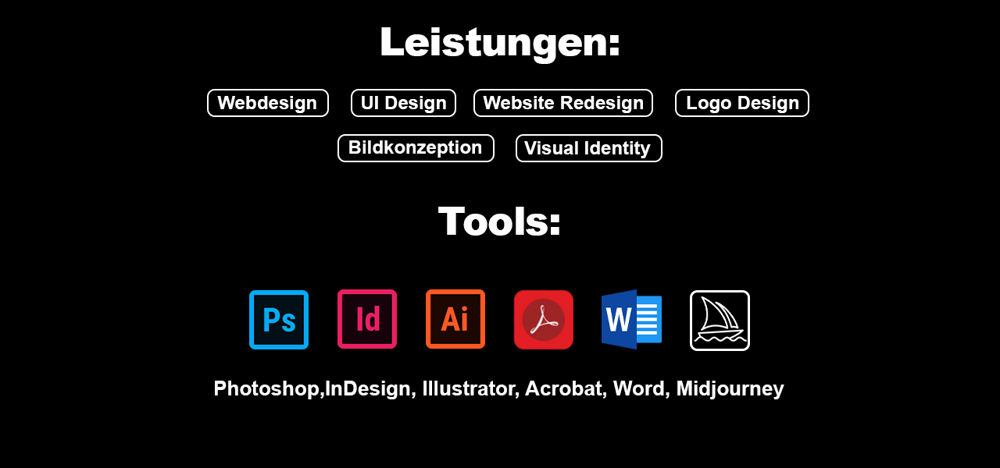
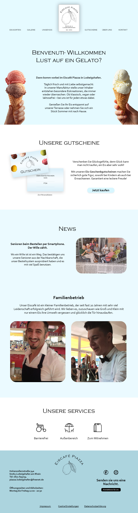
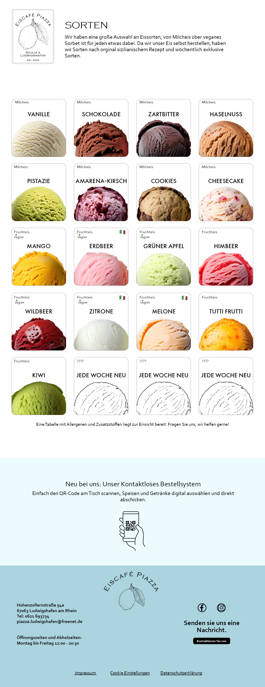
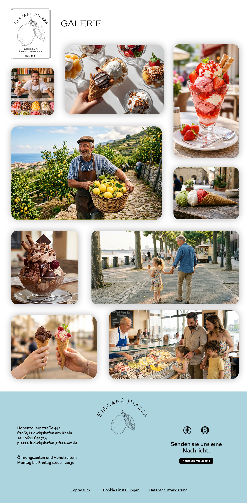
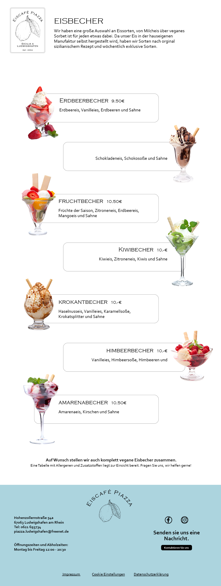
Motion Design
Show reel
Für dieses Projekt entstand ein Motion Design Showreel, das die gestalterische und technische Bandbreite animierter Inhalte zeigt. Im Fokus standen experimentelle Formanimationen, typografische Bewegungen sowie fließende Übergänge und Verschmelzungen von grafischen Elementen.
Ziel des Reels war es, ein Gefühl für Rhythmus, Timing und visuelle Dynamik zu erzeugen und unterschiedliche Animationstechniken zu einem stimmigen Gesamtbild zu verbinden. Dabei wurden abstrakte Formen und Schrift gezielt eingesetzt, um Bewegung als gestalterisches Ausdrucksmittel zu inszenieren.
Das Ergebnis ist ein kompaktes, visuell prägnantes Showreel, das die Verbindung von Grafikdesign und Motion Design hervorhebt und die gestalterische Vielseitigkeit im Bereich Animation demonstriert.